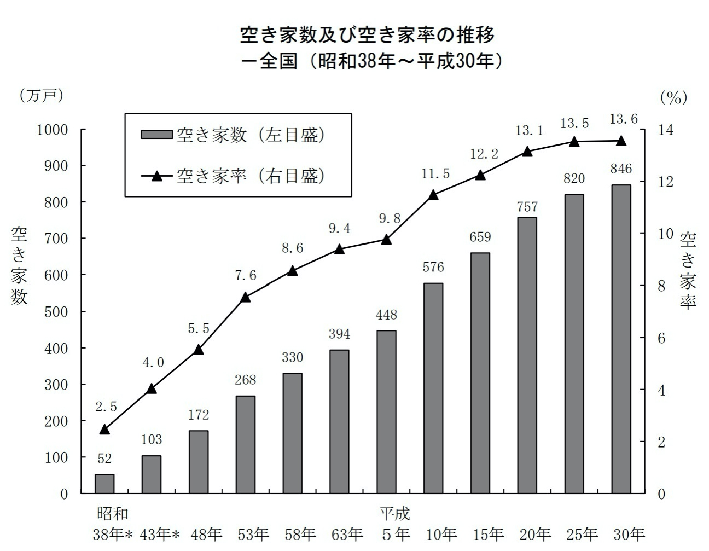
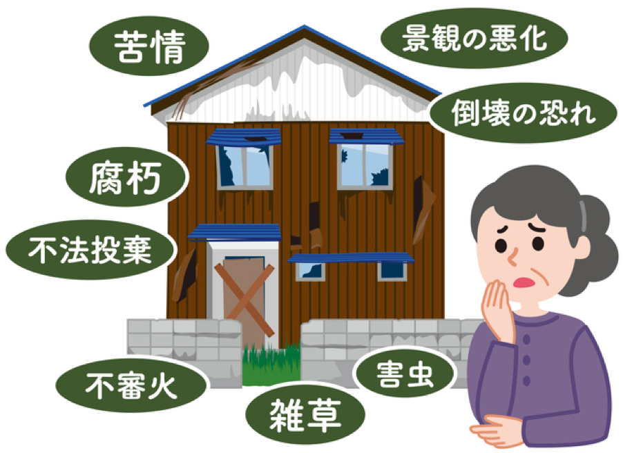
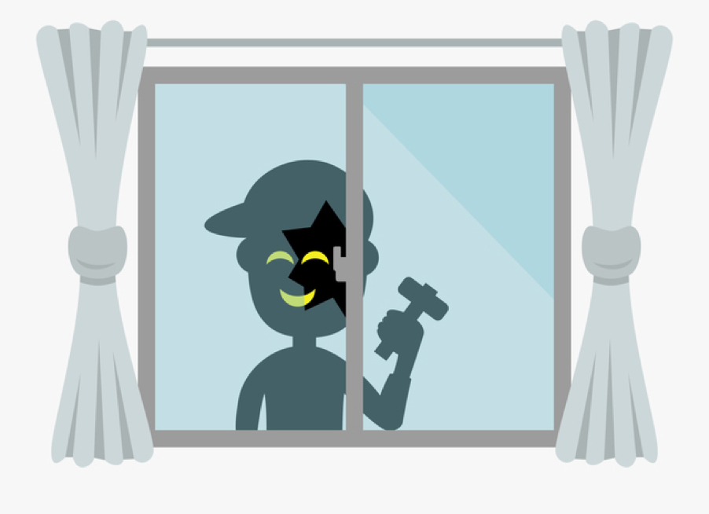
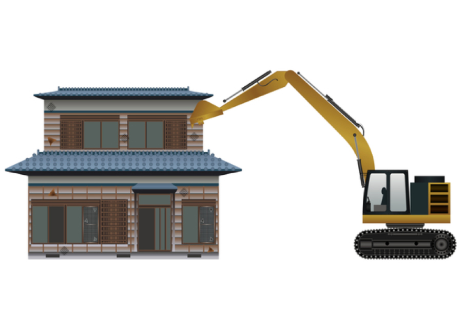

使わない空き家、放置は損？得？
1.2033年は住宅の30%が空き家の見込み
1955年～1973年までの19年間、日本はいわゆる高度経済成長期の時代でした。個人個人の収入が増えて憧れのマイホームを手に入れたり、マンションや団地などの集合住宅も乱立し、次々に建物が建てられていきました。
しかし、1991年頃からバブルが弾け始め、人口も減少を始めます。それと同時に「実家を出て自分の家庭を持つ」核家族がスタンダードに変わり、両親だけが住んでいた実家が空き家に…という人が徐々に増え始めます。
現在では空き家率は13％を超え、なんと住宅の約7件に1件が空き家という状況です。

このまま人口減少が止まらず、核家族がスタンダードのままだと、2033年には総住宅数の3～4件に1件が空き家という予測が出ています。
つまり、「うちの空き家、どうしよう…」という悩みを持つ人がどんどん増えていくということですね。
2.放置された空き家に襲い掛かるトラブル
出産・育児がしにくい環境がいまだに残っていることなど、人口減少の原因は日本において各所に見られますが、空き家が更地にされずに放置されてしまう理由として、日本の税制度に大きな問題がありました。
更地にするより、建物が建っていたほうが税金が安くなってしまう仕組みのせいで空き家が日本中に放置され、いわゆる「空き家問題」へと繋がっていきます。
3.放置された空き家に襲い掛かるトラブル
「空き家を放置して何がいけないの？」と疑問に思う人も多いと思いますが、使う予定のない空き家を解体せずにそのままにしておくと、様々なトラブルを生む種となっていきます。
①地震、積雪、台風

放置されたままの空き家は、人が住んでいる時よりも傷みのスピードは格段に早く、地震、積雪、台風などによる損壊を受けやすくなります。すると、剥がれた木材や割れたガラスなどが隣家などに吹き飛ばされて損害賠償が発生する事態にもなり得ます。
②放火の格好のターゲット
全国で報告されている火災原因の1位は「放火」。人が住んでいない放置された住宅であることは一目見れば明らかであり、放火犯のターゲットにされやすく、庭木などが伸びきって燃え広がりやすいこともあって、隣家への延焼も大いに考えられます。その場合の損害賠償は考えるまでもなく…ですよね。
③不審者の侵入・犯罪発生の温床

「人が住んでいない放置された住宅であることは一目見れば明らか」ということは、不審者が寝泊まりしたり犯罪場所に使われてしまうこともあります。
自分が放置したせいで犯罪が起きてしまうなど、近隣住民にとっても非常に迷惑な話ですし、自分の所有する土地で犯罪が起きてしまうこと自体がとても気分の悪いことです。
4.空き家を持っているだけで損してしまう時代に
更地にするより空き家として放置していたほうが税金が安くなってしまう仕組みのせいでどんどん空き家が増え、ゴミ屋敷化した空き家が近隣住民に迷惑をかけていたり、上記のようなトラブルが発生しやすい状況を受けて、行政は2015年に特別措置法を施行します。
現在では、「特定空き家」に指定された空き家に対して、固定資産税を増やす法律を制定した自治体も見え始め、今後もその流れは強くなっていくと見ていいでしょう。
5.解体工事は急いだほうがお得！

-
増え続ける放置空き家
-
空き家が抱えるリスク
-
空き家にかかる税金は増えていく見込み
これらについて詳しく説明してきました。
放置空き家の増加に向けて、行政も今後さらに対策を強化していくことは明らかです。つまり、「空き家を放置しても、良いことは何もない」と言えます。
解体工事は別に急ぐことではないから、またタイミングを見て…と思っている方は、「解体工事は急いだほうがいい」とご理解いただけるきっかけになったでしょうか。
6.くらそうねならご希望にそった解体工事がご提案できます

くらそうねなら、カンタン2ステップで解体地域の最安値と工事会社が分かります
必要情報の入力→工事会社を選択
各社の比較でより安く、より安心な解体工事を行うことができ、補助金利用なども含めると最大40％ものコストダウンに繋がるケースも。
5万人以上のお客様をサポートしてきたくらそうねなら不安や疑問、トラブルを解消するため、万全のチーム体制でお客様の解体工事をサポートいたします。
くらそうねのお見積りサービスならお見積り後に工事会社からの営業電話や訪問営業も一切ありません。
お安く着手するには少しでも早くお見積りを取ることがコツ。
初めての解体工事でも安心対応、安心価格のくらそうねまでぜひお問い合わせください。

工事会社からの営業電話やメールは一切しないので、
安心してお見積もり入力してください。